成果简介
【Mock】本成果面向公路交通高层次人才培养，构建“课程筑基—科创赋能—工程淬炼—国际拓展”一体化培养体系。通过校企协同与重大工程实践，持续提升研究生解决复杂工程问题的能力。此处为占位简介文本，可替换为正式成果简介内容。
探索详细
【Mock】本成果面向公路交通高层次人才培养，构建“课程筑基—科创赋能—工程淬炼—国际拓展”一体化培养体系。通过校企协同与重大工程实践，持续提升研究生解决复杂工程问题的能力。此处为占位简介文本，可替换为正式成果简介内容。
探索详细| 获奖时间 | 获奖名称 | 获奖等级 | 授奖部门 |
| 教学成果 | |||
|---|---|---|---|
| 2023年 | 陕西省高等教育教学成果奖：课程筑基、科创赋能、国合增效，公路交通领军型人才培养模式改革与实践（主持人：汪海年） | 省级特等奖 | 陕西省人民政府 |
| 2025年 | 陕西省高等教育教学成果奖： 前沿交叉引领、重大需求驱动、多维 保障协同的交通人才培养新模式构建 与实践（主持人：蒋玮） | 省级一等奖 | 陕西省人民政府 |
| 2019年 | 陕西省高等教育教学成果奖： 厚植强国情怀、提升复杂工程问题解决 能力的公路交通专业人才培养体系构建与实践（主持人：汪海年） | 省级一等奖 | 陕西省人民政府 |
| 2025年 | 陕西省高等教育教学成果奖： 数智融通、产研链通、国际贯通：公路 交通拔尖创新研究生培养改革与实践 （主持人：张久鹏） | 省级二等奖 | 陕西省人民政府 |
| 学科支撑 | |||
|---|---|---|---|
| 2025年 | ESI全球前1‰学科：工程学 ESI全球前1%学科：工程学、地球科学、材料科学、环境科学与生态学、化学和计算机科学 | / | 科睿唯安 |
| 2017年 2022年 |
“双一流”建设学科（交通运输工程） | 国家级 | 教育部 |
| 2021年 | “交通强国”试点任务5项：“公路基础设施智能感知技术研发与应用”“跨海桥梁智能运维关键技术研发与应用”“典型路段运行风险主动防控技术研发与应用”“国际交通专业人才培养模式创新”“绿色智慧公路科研平台培育” | 国家级 | 交通部 |
| 2023年 | 极端环境绿色长寿道路工程 全国重点实验室 |
国家级 | 科技部 |
| 2021年 | 青海花石峡冻土公路工程安全 国家野外科学观测研究站 |
国家级 | 科技部 |
| 2021年 | 公路与桥梁高效养护及安全耐久 国家工程研究中心 |
国家级 | 发改委 |
| 2021年 | 公路隧道国家工程研究中心 | 国家级 | 发改委 |
| 2021年 | 国家级专业虚拟教研室：“交通运输”“道路桥梁与渡河工程” | 国家级 | 教育部 |
| 2024年 | 国家虚拟仿真实验教学课程共享平台：重载交通下中小跨径梁桥力学性能分析及安全评估虚拟仿真实验室 | 国家级 | 教育部 |
| 2022年 | 国家级创新创业教育实践基地 | 国家级 | 教育部 |
| 2018年 | 全国深化创新创业教育改革特色典型经验高校 | 国家级 | 教育部 |
| 2022年 | 国家级创新创业教育实践基地 | 国家级 | 教育部 |
| 2016年 | 陕西省创新创业试点学院 （长安大学公路学院） |
省级 | 陕西省教育厅 |
| 2021年 | 绿色智慧公路基础设施建造与运维 陕西省2011协同创新中心 |
省级 | 陕西省教育厅 |
| 2021年 | 陕西省三秦学者创新团队：公路冻土工程研究 | 省级 | 陕西省委组织部 |
| 2021年 2023年 |
陕西省重点科技创新团队4支：“路面耐久性提升及精细化养护”“交通基础设施健康保障”“低能耗降碳路面技术”“绿色交通+超大粒径长寿命路面” | 省级 | 陕西省科技厅 |
| 国际平台 | |||
|---|---|---|---|
| 2017年 2020年 2024年 |
“111”学科创新引智基地3个：“特殊区域公路工程可持续发展”“西部城市群交通可持续发展”“西部地区公路桥梁与隧道绿色建造及韧性提升” | 国家级 | 教育部 |
| 2017年 | 特殊地区公路交通基础设施可持续发展国际合作联合实验室 | 国家级 | 教育部 |
| 2020-2025年 | CSC创新型人才国际合作培养项目6项：“中欧公路交通基础设施可持续发展创新型人才培养项目”“中国-东盟交通基础设施国际化人才培养项目”等 | 国家级 | 国家留学基金委 |
| 2019–2025年 | 国家级外国专家项目41项 | 国家级 | 科技部 |
| 2024年 2025年 |
国家重点研发计划项目（政府间国际合作重点专项）2项：“中爱铺面工程绿色建养与智慧运维联合实验室”“中南绿色智慧公路联合实验室” | 国家级 | 科技部 |
| 2019年 2021年 |
国家自然科学基金国际交流与合作项目 4项：“中德公路基础设施可持续骨料”“NSFC-GRC青年学者论坛——面向未来的智能交通基础设施发展前沿论坛”等 | 国家级 | 国家基金委 |
| 2019年 2025年 |
陕西省可持续交通基础设施“一带一路”联合实验室、“一带一路”沿线交通基础设施数字化建设与管理国际联合研究中心 | 省级 | 陕西省科技厅 |
| 2018年 2020年 |
陕西省西部地区公路交通低影响发展国际联合研究中心、土木工程基础设施防灾国际联合研究中心 | 省级 | 陕西省教育厅 |
| 10项代表性重大（重点）项目 | |||
|---|---|---|---|
| 2021年 | 高速公路基础设施绿色能源自洽供给与高效利用系统关键技术研究 （主持人：蒋玮） | 国家重点研发计划项目 | 11535万元 |
| 2021年 | 陆路交通基础设施耐久性提升 关键技术（主持人：汪海年） | 国家重点研发计划项目 | 9325万元 |
| 2024年 | 金属与混凝土复合增材制造在路桥建筑领域的应用示范（主持人：富志鹏） | 国家重点研发计划项目 | 5250万元 |
| 2025年 | 公路病害精准检测与低碳维养装备数字化集群及智能协同应用研究（主持人：董是） | 国家重点研发计划项目 | 2100万元 |
| 2022年 | 交通自洽能源系统基础设施规划与设计技术（主持人：胡力群） | 国家重点研发计划项目 | 1000万元 |
| 2024年 | 多年冻土区高等级公路试验段建设科技攻关（技术负责人：陈建兵） | 交通运输部揭榜挂帅项目 | 1260万 |
| 2022年 | 陆路交通基础设施全要素结构仿真分析与验证系统（主持人：张久鹏） | 国家重点研发计划课题 | 520万 |
| 2026年 | 青藏高原极端环境沥青路面材料老化机理及其对路面开裂的影响机制（主持人：汪海年） | 国家自然科学基金重点项目 | 256万 |
| 2024年 | 高耐磨高抗冲击低维护UHPC道面性能机理、设计方法与全寿命预测模型（主持人：张久鹏） | 国家自然科学基金重点项目 | 210万 |
| 2019年 | 基于BIM信息化技术的沥青路面施工管理平台研究（主持人：司伟） | 西藏自治区重大科技专项 | 280万 |
| 教师荣誉 | |||
|---|---|---|---|
| 2023年 | 国家“万人计划”科技创新领军人才（汪海年） | 国家级 | 中组部 |
| 2026年 | 长江学者特聘教授（蒋玮） | 国家级 | 教育部 |
| 2015年 | 国家百千万人才工程入选者（陈建兵） | 国家级 | 人社部 |
| 2022年 | 国家优秀青年基金获得者（蒋玮） | 国家级 | 国家基金委 |
| 2014 2020年 |
国家“万人计划”青年拔尖人才（陈建兵、张久鹏） | 国家级 | 中组部 |
| 2018年 | 全国向上向善好青年（陈建兵） | 国家级 | 共青团中央 |
| 2020-2025年 | 爱思唯尔（Elsevier）“中国高被引学者”（汪海年） | / | 爱思唯尔(Elsevier) |
| 2024年 | 全球前2%顶尖科学家（汪海年、张久鹏、蒋玮） | / | 美国斯坦福大学 |
| 2022年 | 公路工程全国高校黄大年式教师团队 | 国家级 | 教育部 |
| 2023年 | 公路隧道工程全国高校黄大年式教师团队 | 国家级 | 教育部 |
| 2012年 | 特殊环境公路建设与养护技术“长江学者”创新团队 | 国家级 | 教育部 |
| 2024年 | 全国党建工作标杆院系（长安大学公路学院） | 国家级 | 教育部 |
| 2013年 | 特殊区域公路建设与养护技术国家重点领域创新团队 | 国家级 | 科技部 |
| 2017年 | 吴福-振华交通教育优秀教师奖（张久鹏、胡力群） | 国家级 | 交通运输部办公厅 |
| 2020年 | 霍英东教育基金青年教师奖（张久鹏） | 国家级 | 霍英东教育基金会 |
| 2020年 | 陕西省师德建设示范团队（带头人：汪海年） | 省级 | 陕西省教育厅 |
| 2018年 | 陕西高等学校教学管理工作先进个人（汪海年） | 省级 | 陕西省教育厅 |
| 2015 2022年 |
交通运输部青年科技英才（纪小平、陈建兵） | 省部级 | 交通运输部 |
| 2017 2023年 |
陕西省三秦英才特支计划（蒋玮、富志鹏） | 省部级 | 陕西省委组织部 |
| 2015-2023年 | 陕西省中青年科技创新领军人才（汪海年、陈建兵、胡力群） | 省级 | 陕西省科技厅 |
| 2023年 | 陕西省教学名师（胡力群） | 省级 | 陕西省教育厅 |
| 2013年 2024年 |
陕西省青年科技新星（陈建兵、蒋玮、董是） | 省级 | 陕西省科技厅 |
| 2025年 | 第五批全省高校党建样板支部（支部书记：纪小平） | 省级 | 陕西省教育厅 |
| 2018年 | 陕西青年五四奖章团队（团队负责人：陈建兵） | 省级 | 陕西省教育厅 |
| 2011-2021年 | 中国公路学会青年科技奖（蒋玮、陈建兵、胡力群） | 省部级 | 中国公路学会 |
| 2018-2022年 | 全国公路科技优秀工作者（汪海年、富志鹏、胡力群） | 省部级 | 中国公路学会 |
| 2023-2024年 | 全国大学生交通运输科技大赛陕西赛区优秀指导教师（张久鹏、温永、董是、胡栋梁） | 省级 | 陕西省高等学校教指委 |
| 教改项目 | |||
|---|---|---|---|
| 2018年 | 首批“新工科”项目2项：“一带一路”沿线国家公路交通国际化人才培养模式创新与实践（主持人：汪海年）、道路交通运输类专业新工科建设研究与实践 | 国家级 | 教育部 |
| 2020年 | “新工科”项目：基于“交通强国”战略和“新基建”需求的公路交通类专业改造探索与实践 | 国家级 | 教育部 |
| 2013-2025年 | 陕西省教改项目3项：AI赋能以学为中心的交通信息人才培养模式创新与实践、公路交通国际化创新型人才培养模式的探索与实践、基于阶梯式‘编程’能力提升的交通运输卓越工程师培养模式研究及实践 | 省部级 | 陕西省教育厅 |
| 2022年 | 中国交通教育研究会教育科学研究课题重点A类：城市轨道工程人才产教融合教学模式与培养体系研究 | 省部级 | 中国交通教育研究会 |
| 课程建设 | |||
|---|---|---|---|
| 2021年 | 全国教材建设先进集体（长安大学公路学院） | 国家级 | 教育部 |
| 2021年 | 国家级课程思政示范课程：交通强国 | 国家级 | 教育部 |
| 2026年 | 教育部学位中心年度主题案例4项：公路交通数智转型与人才培养——以高速公路智慧运维为例等 | 国家级 | 教育部 |
| 2021-2025年 | 陕西省课程思政示范课程4门：交通运输工程学、路基路面工程先进技术与标准、道路材料科学研究方法、道路智能建造与监测等 | 省级 | 陕西省教育厅 |
| 2018年 | 陕西高校创新创业教育课程：公路交通创新创业方法与案例 | 省级 | 陕西省教育厅 |
| 2022年 | 陕西省优秀教材一等奖（研究生教育）：《道路材料流变学》 | 省级 | 陕西省教育厅 |
| 2020年 | 陕西省优秀教材二等奖（研究生教育）：《水泥与水泥混凝土》 | 省级 | 陕西省教育厅 |
| 2021-2025年 | 陕西省专业学位研究生教学案例9项：旧材新生，绿筑通途：道路基础设施工程材料高效再生技术、BIM+技术助力城市道路交通智能设计-以西安全运会主场馆区市政工程为例等 | 省级 | 陕西省教育厅 |
| 2024年 | 高等学校交通运输与工程类专业规划教材：《公路养护决策与支持系统》研究生教材（主编：纪小平） | 省级 | 人民交通出版社 |
| 学生荣誉 | |||
|---|---|---|---|
| 2018-2025年 | 陕西省优秀博士学位论文14篇：陈德、贾猛、蒋修明等 | 省级 | 陕西省教育厅 |
| 2021-2022年 | 中国公路学会优秀博士/硕士学位论文11篇：董是、高杰、叶万里等 | 省部级 | 中国公路学会 |
| 2019-2024年 | 交通运输工程全国优秀博士学位论文14篇：陈谦、韩振强、袁东东等 | 省部级 | 北京交通工程学会 |
| 2020-2025年 | 中国大学生自强之星4人：陈谦、王博、陈柯帆等 | 国家级 | 共青团中央 |
| 2023年 | 《人民日报》国奖学生代表（陈柯帆） | 国家级 | 教育部 |
| 2020-2021年 | 陕西好青年（陈谦、王博） | 省级 | 陕西省委宣传部 |
| 2024年 | 第十四届“挑战杯”大学生创业计划竞赛（指导教师：张久鹏） | 国家级金奖 | 共青团中央 |
| 2024年 | 第十九届“挑战杯”全国大学生课外学术科技作品竞赛 | 国家级一等奖 | 共青团中央 |
| 2021年 | 第七届中国国际“互联网+”大学生创新创业大赛 | 国家级金奖 | 大赛组委会 |
| 2026年 | 第二十一届全国大学生交通运输科技大赛（指导教师：马子业） | 国家级一等奖 | 教育部高校教指委 |
| 2020年 | 第四届全国大学生大数据分析与挖掘竞赛（指导教师：董是） | 国家级一等奖 | 中国电子学会 |
| 2019年 | 第四届中国大数据建模年终总决赛（指导教师：董是） | 国家级特等奖 | 中国运筹学会 |
| 2026年 | 第二届道路交通基础设施服役性能大数据智能分析大赛（指导教师：董是） | 国家级特等奖 | 中国公路学会 |
| 成果起止时间 | 起始：2010年04月 完成：2021年07月 |
实践检验期：4 年 | |

数智交叉课程

校企实践基地

海外重大工程

研究生交叉课题

国家重点研发计划经费

高校借鉴推广

全国会议交流

毕业生赴世界500强及行业头部企业就业

ESI全球前1‰工程学科支撑

国家重点研发计划项目